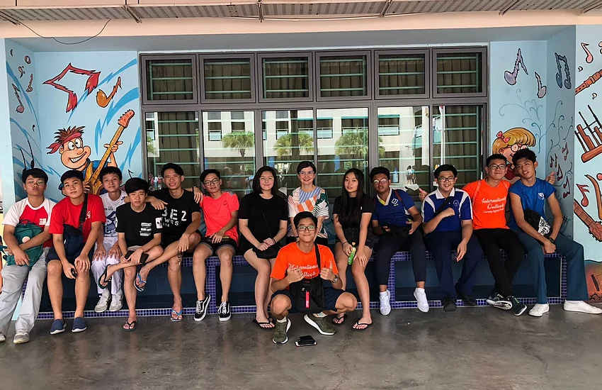
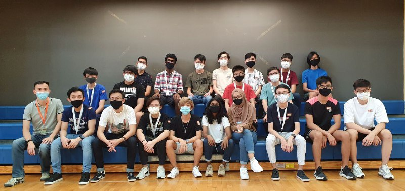

Primary School Class
This was during Teachers day and me and my primary school friends decided to meet up and go back to our primary school to visit the teachers.
Seconadry School Class
This was a picture taken after sports day, many of my classmates won medals.

Polytechnic Class
This picture was taken during a bonding event organised by our seniors.